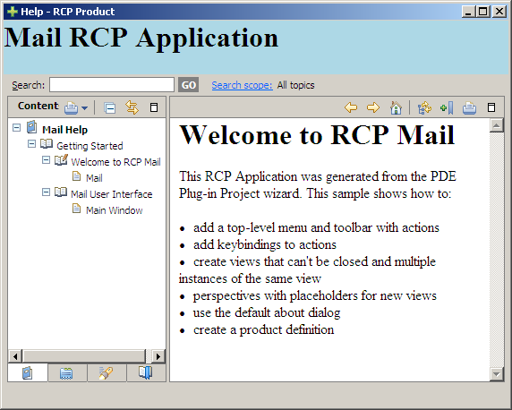

The Eclipse help system can be configured and branded to suit your product by specifying custom defaults for number of help preferences. The help preferences are specified in the plugin_customization.ini file within the product. To customize the help system:
1. Add a property to the plug-in manifest with the plug-in customization file name (plugin_customization.ini).
2. Add preferences to plugin_customization.ini to customize the help system.
In plugin.xml:
<extension
id="product"
point="org.eclipse.core.runtime.products">
<product
application="Mail.application"
name="RCP Product">
....
<property
name="preferenceCustomization"
value="plugin_customization.ini">
</property>
…
</product>
</extension>
In plugin_customization.ini:
org.eclipse.help/HELP_DATA = helpData.xml
org.eclipse.help.base/help_home = /MailHelp/html/toc.html
org.eclipse.help.base/banner = /MailHelp/html/banner.html
org.eclipse.help.base/banner_height = 60
The HELP_DATA property allows to control the order in which contributed parts of the table of contents are displayed for your product or to hide parts of the table of contents that some of your plug-ins contribute. The file helpData.xml shown in the fragment below, sets the TOC display order to toc.xml, followed by toc1.xml and hides the file toctest.xml.
<extensions>
<tocOrder>
<toc id="/MailHelp/toc.xml"/>
<toc id="/MailHelp/toc1.xml"/>
</tocOrder>
<hidden>
<toc id="/MailHelp/toctest.xml"/>
</hidden>
</extensions>
Other interesting properties include:
* org.eclipse.help.base/help_home: It defines the page to show in the content area when opening help. The format is /PLUGIN_ID/path/to/file.html
* org.eclipse.help.base/banner: It defines the location of the banner page to display in the top frame. For example org.eclipse.help.base/banner = /MailHelp/html/banner.html
* org.eclipse.help.base/banner_height: It defines the height of the banner frame.

Figure 6.10: Customized help for the RCP mail template.